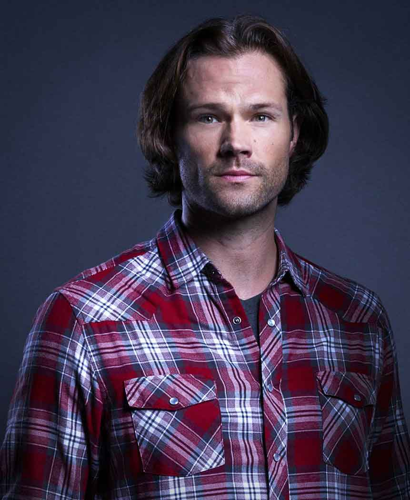
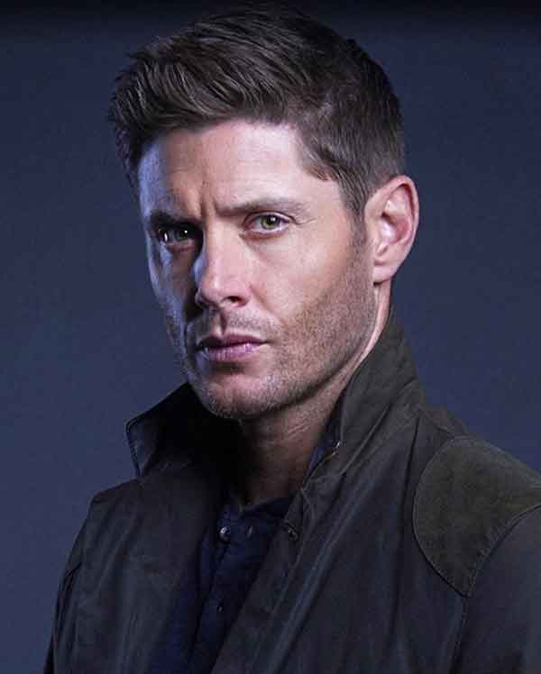
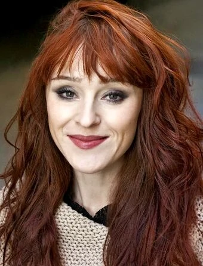

About Supernatural
This television drama is about the two Winchester brothers, Sam and Dean, who were raised by their father, John, to hunt and kill all things that go "bump in the night" after his wife, Mary, was murdered by an evil supernatural being when the boys were young. 22 years later the brothers set out on a journey, fighting evil along the way, to find their recently missing father who, when they finally meet up with, reveals he knows what killed their mother, a demon and has found a way to track and kill it. Meanwhile, Sam starts to develop frightening abilities that include death visions, visions of people dying before it actually happens. These visions are somehow connected to the demon who murdered his mother and its mysterious plans that seem to be all about Sam. When their father dies striking a deal with the very same devil that had killed his wife, the brothers, now alone and without their mentor, are determined to finish the crusade their father started. But disturbing revelations about Sam's part in the demon's apocalyptic plans are presented when John's dying last words to Dean are revealed.
Being a cult series, Supernatural has garnered a dedicated fanbase. They are active online, and many have written fanfiction stories about the show, ranging from Wincest (the romantic pairing of brothers Dean and Sam Winchester) to Destiel (the romantic pairing of Dean Winchester and Castiel) to various other character pairings. The writers have referenced this several times in the series, including the 200th episode, which makes references to Wincest, Destiel, and Sastiel (the romantic pairing of Sam Winchester and Castiel).
The first fan conventions dedicated to Supernatural took place in Nashville, Tennessee, in October 2006 and in London in May 2007, and conventions have since expanded through to Germany and throughout the United States. The series' stars and large guest cast make appearances, with fans from the United States, Europe, China, and Australia attending.
Sam Winchester
Dean Winchester
Castiel
Other Main Characters
John Winchester
Bobby Singer
Jody Mills
Lucifer
Crowley
Rowena
